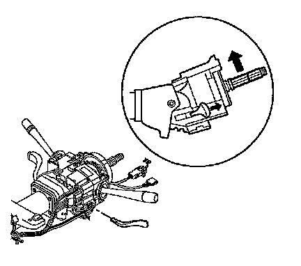
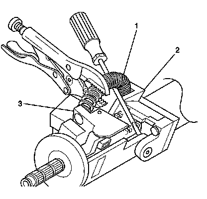
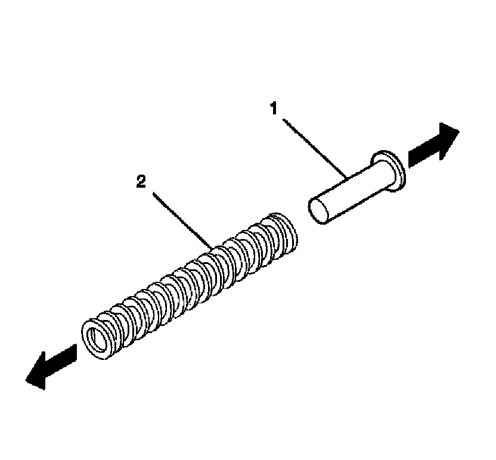
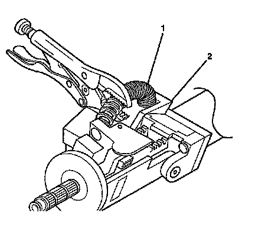

Steering Column Tilt Spring Replacement
Steering Column Tilt Spring Replacement
Removal Procedure
1. Remove the steering column trim covers. Refer to Steering Column Trim Covers Replacement (Steering Column Trim Covers Replacement) .

2. Tilt the steering column to the UP position.

Caution: The tilt spring and the spring guide are under pressure. The tilt spring and the spring guide may become a projectile. Secure the spring with locking pliers during removal. Secure the spring with locking pliers during installation. Bodily injury may result during removal and installation of the tilt spring and the spring guide. Always use caution during removal and installation of the tilt spring and the spring guide.
3. Remove the end of the tilt spring using the following procedure:
1. Pry up the tilt spring (1) until a bulge occurs and most of the tilt spring tension is removed.
2. Secure the tilt spring (1) with locking pliers.
3. Continue prying up the tilt spring (1) until the tilt spring disengages from the post on the steering column jacket (2) and from the steering column tilt head (3).

4. Remove the tilt spring guide (1) from the tilt spring (2).
Installation Procedure
1. Ensure the steering column is tilted in the UP position.
2. Install the tilt spring guide (1) into the tilt spring (2).

3. Install the tilt spring using the following procedure:
1. Install the tilt spring (1) onto the steering column tilt head.
2. Install the tilt spring (1) onto the post on the steering column jacket (2).
3. Release the locking pliers.
4. Work the steering column tilt function to check proper operation before continuing.
5. Install the steering column trim covers. Refer to Steering Column Trim Covers Replacement (Steering Column Trim Covers Replacement) .